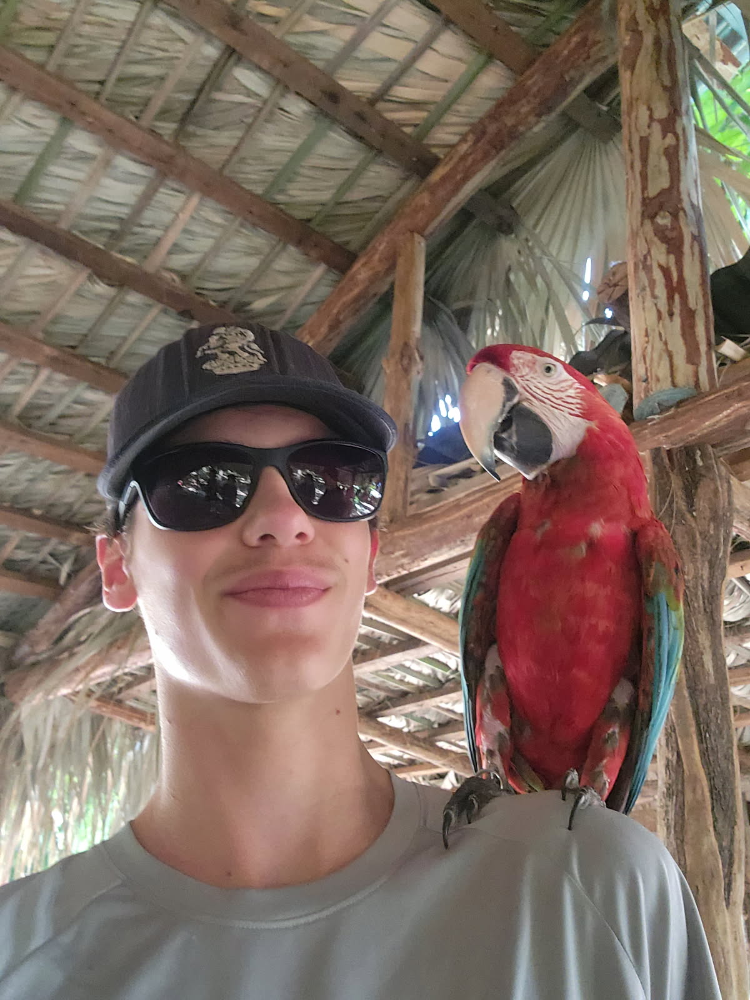

Christ Church High School Youth Tech Team
__________________________________________________________
Our Mission
Our goal is not just to “do the job”—we use technology to support worship and teaching, and enhance the overall experience of everyone attending youth. This team isn't about filling a gap. The goal is to be able to use your talents to improve the service. We want you to enjoy the experience!
Core Values
Faithful Stewardship
God has given each of us gifts, talents, and opportunities to serve. We want to use them faithfully and responsibly, doing our best to support worship and ministry. Mistakes will happen, and that's okay. We learn, grow, and continue serving together.
Teamwork
Being a part of this team requires teamwork! Our techs need to work together with other tech team members, as well as with the worship band and the speaker. This will ensure things run much smoother, and problems can be solved with less difficulty.
Servant Leadership
We serve not to draw attention to ourselves, but to enhance the experience of others, while remembering that we serve God.
Learning
Everyone starts somewhere! There's so much you can do with this team. You can learn as much or as little as you like. Don't be afraid to ask questions, and to play around! (outside of the service)
Join The Team
Want to join our team as a volunteer? We'd love to have you! No tech experience is required, we'll guide your learning! If this sounds like it would interest you, feel free to contact Liam at liamnfriesen@gmail.com, or fill out the Volunteer Form to join!
Sources
Do you have suggestions or ideas for the tech team? Fill out the Suggestions Form!

